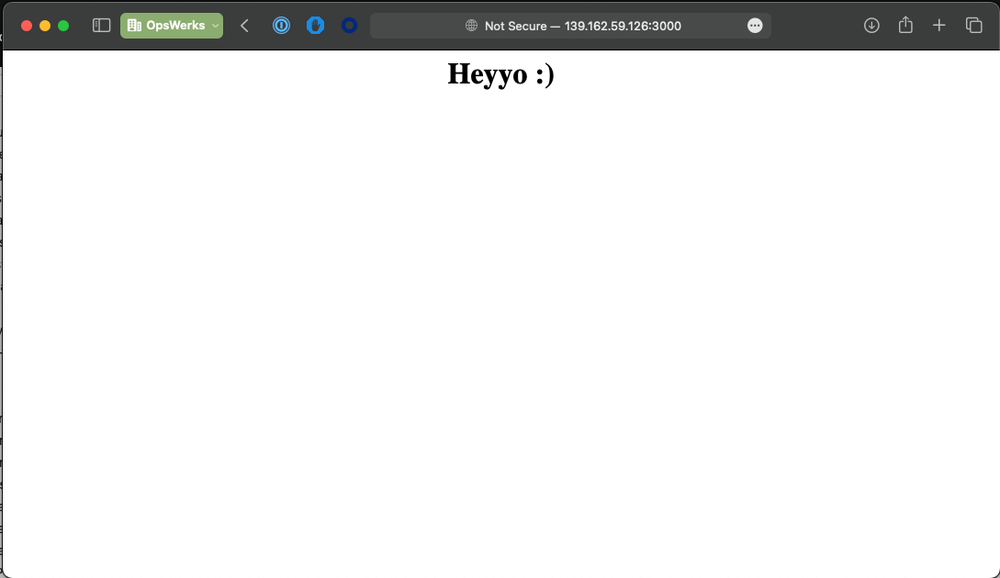

Jenkins Assessment
Before you begin...
- Ensure with your instructor that your instance has been reset
- Make sure you can login to your instance using your account and password (see here for reference)
- You need a github account for this exam
Instructions
(4 Points) Setting up your Jenkins instance
- SSH into the first instance (server) and create a folder named
jenkins_homein the home directory. - Execute the following commands:
docker run -p 8080:8080 -v ~/jenkins_home:/var/jenkins_home -d --rm --name jenkins-server jenkins/jenkins:lts-jdk17
- On your browser, go to
[IP of Server]:8080to visit your Jenkins instance and follow the first time instructions.- The
secretsfolder is located~/jenkins_home - Install the default plugins
- Use your instance's username and password when making your first Jenkins user
- The
(4 Point) Setting up the agent
- Under
Manage Jenkins>Credentials, create a username:password credential with your instance's username and password - Under
Manage Jenkins>Nodes(Nodescan be named differently. If you can't find it, you can access theNodespage via[IP of Server]:8080/computer) - Create a new
permanent agentnamed linux-node with the following settings:- Executors: 1
- Remote root directory: /home/[username]/
- Usage: Use this node as much as possible
- Launch method: SSH
- Host: The IP/Host Name of your second instance (agent)
- Credentials: Use the credentials you created in step 1
- Host Key Verification Strategy: Non verifying Verification Strategy
- You should have a running agent after following this steps.
Setting up your repository
- Fork the following repository: https://github.com/opswerks-lab/node-webapp and clone it on the server instance.
- On your Github account settings, got to
Developer settings>Personal access tokensand create one for yourself with repo access.NOTE: You will need this personal access token so you can push changes to this repository. You can setup an SSH Key Pair instead but that would take longer.
- Under
Manage Jenkins>Credentials, create a username:password credential with your git credentials
With this your setup should be ready for the main tasks.
Tasks
- (1 Point) Install a plugin called:
Docker PipelineNOTE: Restarting Jenkins might kill the docker container, so you may need to run the docker command again.
- (1 Point) Create a pipeline named
node-app - This pipeline gets its
Jenkinsfilefrom the master/main branch of your forked repository. You can use the credential you created with your git username and password. - The goal of the pipeline is to build the Dockerfile found in the repository and run it on the agent.
- You may encounter issues during building. Please read the logs and fix the issues accordingly.
Please refer to these documentations if you need help:
- https://www.jenkins.io/doc/book/pipeline/jenkinsfile/
- https://www.jenkins.io/doc/book/pipeline/docker/#building-containers
Visiting [IP of Agent]:3000 should result to:

NOTE Achieving this result will net you a perfect score.